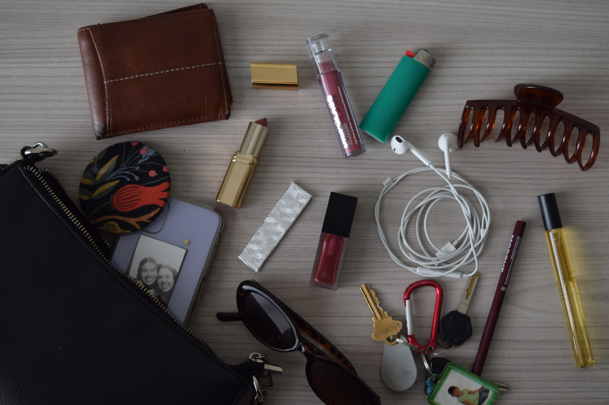

Journal 5
The article that I read of Game Design Principles by juegoadmin explains what are the most important aspects of game design generally and then it narrows it down to the most important design principles. I understood that the two main focal points when it came to game design was the user's experiences as well as exciting features, obviously to keep the user entertained and have them stay on the game. What I thought was super interesting about this article was that the most important design principles when it came to game design was the core basics and mechanics on how a game should be run. The first three principles: set clear goals and objectives, engage core mechanics, and maintain game flow and player experience, where the most important yet the most non-essential part of a game (in theory). Typically when we think of game design, most just focus on the graphics, sound and the reward system that games produce and give to the user whether they win or lose. In this article those reward systems or acknowledgements are one of the seven key principles of game design but they are not mentioned until the end. Showcasing that they should not be a coder's first thought when capturing the essence of the game and building on the game itself. I think this information is very important when it comes to the final project for this class. It allows me as the designer of the game to understand that while visuals and the “fun” part of designing is important it shouldn’t be the most important. That the user experience and functionality of the design is what is most important and allows for better game success. The list that was provided in this article will come in handy when we start coding the basics and expanding on creating a game.
Journal 4
The image that Jade had shared with me is one of a potion bottle. The other images that were provided during the presentation were of ingredients that could potentially be in the potion. Some interesting aspects of the images were that they were handdrawn. I noticed that Jade was planning on drawing all of the ingredients that she wanted to include in her potion instead of including maybe a png of the object she decided to draw it. Another thing that I noticed was how detailed all of her illustrations were. The most obvious thing about her image was what it was supposed to reflect. There wasn’t anything that was mysterious about the image. I think to make it less ordinary I would make the ingredients a bit whimsical since that is the theme and I feel as though the potion is the only thing that's really whimsical.
This image is interesting because I think that when people look at the image they can tell exactly what the theme is going to be. Another thing that I think makes this image interesting is that I captured this image last year in DES113 photography class with Glenda. This image relates to the topic because it's a part of a series of the aesthetics that someone carries with them. For me, this showcases the things that I carry within my purse but it also highlights the aesthetics of what girls carry on them. I think this collection says something about me because they reflect a little piece of my personality since it is all things that I own. I think to make them more compelling I might edit them slightly. Have a warmer tone.

Journal 3
I found the website Dimito. I think that the use of images within this website is extremely effective, interesting and inspires visual thinking because it has a cohesive color scheme but still there are colors that explode the image with vibrancy. Coming from the article, I think Dimito definitely covers segment number 8, “start conversations.” I think this because all of the images are complex and no two images are the same. It adds this dynamic within the websites that makes you curious. The first image that is introduced in the website is two toned red and blue with a white title. This piece invites that space of starting a conversation because it's different and doesn't showcase much of the apparel that is within the site. I think some drawback with this website when it comes to the images is that they sometimes feel a bit all over the place. The images are well documented but there lacks a cohesive story throughout the site.
Journal 2
The things that I noticed within the reading was that the purpose of an overlay was a creative solution to a design challenge of conveying important information without losing context. I think this is really important because when thinking about the purpose of an overlay it really is something to bring attention to the user but to not deter them from the reason they are at specific sites, etc. Another thing that I noticed was the clear transformation that the overlay took in the design process. As more and more people designed the overlay, designers thought of more ways to make it more user friendly. Noted within the article it states that just because you can make an overlay doesn't mean you should. It further implies that the overlay should be introduced depending on the user and the demographics. It is important to know who your audience is. Another thing that I enjoyed within the reading was that it provided the user with clear definitions of what words meant and things that were commonly seen with overlays.
Journal 1
The things that I noticed to make the best practices for form design was to make it as simple as possible. As the user goes through the motions of filling out the form the little amount of information and steps is better in order to increase the probability of them completing it. Another thing that I noticed was that providing the user with a visual of which step they are on is incredibly useful for them too. It allows for retention to still be there. As I continued reading the article it is clear that creating a vertical form is more ideal than a horizontal form, since the user is going to be moving down the form like a list. There are little details that I think people don't realize that actually improve the experience of the user like having a list for things instead of a drop down menu, having no default text, etc. these small features can also increase the likelihood of them completing it.
example
I think this webiste exemplifies the best practices because there isnt a lot of information or jargon when searching for items, checking out, and viewing sub tabs.